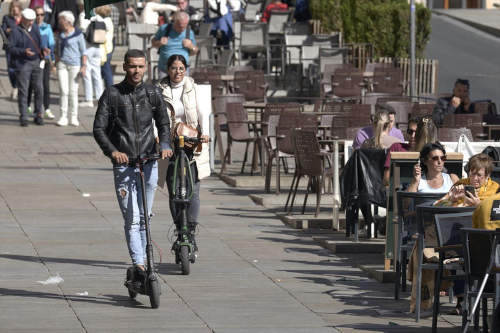

Día histórico en Asturias: así ha sido la apertura de la variante de Pajares
El tren llega al Principado tras superar la variante de Pajares a 201 kilómetros por hora. El trayecto entre Madrid y Oviedo se completó en un recorrido de aproximadamente tres horas y 12 minutos, una hora menos que el que existía hasta la fecha
Seguir leyendo ...

Renfe prohíbe el acceso con patinetes a sus trenes, mientras Metro Bilbao, Euskotren y ETS estudian la medida
La prohibición de Renfe entrará en vigor el 12 de diciembre y viene fundamentada por la situación de peligro generada ante incendios de baterías. Por su parte, Metro Bilbao, Euskotren y Euskal Trenbide Sarea adoptarán la decisión final "de forma consensuada".
Seguir leyendo ...
Renfe permitirá pagar los billetes en cuatro veces sin intereses
El acuerdo con la plataforma Aplazame del banco WiZink dará esta opción a los clientes con compras superiores a 150 euros.
Seguir leyendo ...